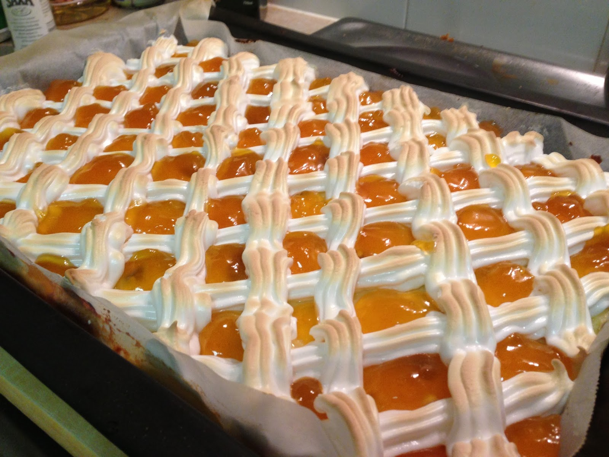

Hozzávalók
A tésztához:
- 30dkg liszt
- 15dkg margarin
- 10dkg porcukor
- 2db tojássárgája
- 1kh szódabikarbóna
- 1 csipet só
- 1dl tejföl
A töltelékhez:
- 50dkg túró
- 10dkg kristálycukor
- 3ek búzadara
- 2db tojássárgája
- 1dl tejföl
- A tetejére:
- baracklekvár
- 4dbtojásfehérje
- 15dkgporcukor
